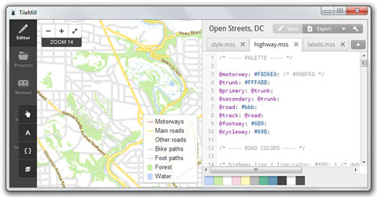

TileMill¶
Design studio for Web Maps Σχεδιαστικό Λογισμικό για Διαδικτυακούς Χάρτες ~~~~~~~~~~~~~~~~~~~~~~~~~~~~~~~~~~~~~~~~~~~~~~~~~~~~~~~~~~~~~~~~~~~~~~~~~~~~~~~~
Το TileMill είναι ένα σχεδιαστικό λογισμικό για δημιουργία όμορφων, διαδικτυακών, διαδραστικών χαρτών από μια μεγάλη ποικιλία από υπάρχουσες πηγές γεωχωρικών δεδομένων.
Οι διαδικτυακοί χάρτες που δημιουργούνται μπορούν να χρησιμοποιήσουν πτυσσόμενες εργαλειοθήκες, ενεργά με κλίκ παράθυρα, διαδραστικά γραφικά και εικόνες, σχήματα SVG, πλούσιες υφές και πολλαπλά επίπεδα. Οι τροποποιημένοι χάρτες μπορούν να εξαχθούν σε διάφορα πρότυπα όπως: .png, .pdf, .svg και MBTiles. Τα MBTiles είναι ένα ανοιχτό πρότυπο που παρέχει έναν τρόπο για αποθήκευση χιλιάδων πλακιδίων σε μία μοναδική SQLite βάση δεδομένων, κάνοντας εφικτή την αποθήκευση και μεταφορά των διαδικτυακών χαρτών σε ένα μόνο αρχείο. Και αφού η SQLite είναι διαθέσιμη σε πολλές πλατφόρμες, τα MBTiles είναι ένα ιδανικό πρότυπο για διάβασμα των πλακιδίων απευθείας στο διαδίκτυο ή για εμφάνιση σε κινητές συσκευές.
Τα δεδομένα μπορεί να προέρχονται από διανυσματικά δεδομένα (CSV, shapefile, KML, GeoJSON), ψηφιδωτά δεδομένα (GeoTiff), όπως επίσης και μεγάλες πηγές δεδομένων όπως OpenStreetMap, PostgreSQL/PostGIS and SQLite.
Το Tilemill χρησιμοποιεί ένα Mapnik χάρτη που παρέχεται από την βιβλιοθήκη (όπως χρησιμοποιείται από το OpenStreeMap) και χρησιμοποιεί το CartoCSS ως γλώσσα μορφοποίησης των φύλλων.
Το TileMill τυπικά χρησιμοποιείται σε σύνδεση με το GIS (όπως το QGIS) για προετοιμασία δεδομένων και με ένα γραφικό συντάκτη (όπως το GIMP) για δημιουργία εικονιδίων, προτύπων και υφής.
{kind=link}
Βασικά Χαρακτηριστικά¶
- Φόρτωση δεδομένων από μεγάλη ποικιλία πηγών
- ESRI Shapefile
- KML
- GeoJSON
- GeoTiff
- CSV spreadsheet
- OpenStreetMap
- Σύνδεση με τις Γεωχωρικές βάσεις δεδομένων
- PostgreSQL + PostGIS
- SQLite
- Διαχείριση τροποποιημένων επιπέδων
- Μορφοποίηση Δεδομένων
- Μορφοποίηση με χρήση υπαρχόντων ή τροποποιημένων χρωμάτων
- Υπο όρους μορφοποίηση
- Πρόσθεση Εργαλειοθηκών και Υπομνημάτων
- Δημοσίευση
- Αρχεία εικόνων: .png, .pdf, .svg, MBTiles.
- Δημοσίευση ως διαδικτυακή σελίδα
- Ένθετος χάρτης σε διαδικτυακή σελίδα ή Σύστημα Διαχείρισης Περιεχομένου (WordPress, Drupal)
- Προγραμματιστική διεπαφή (API) JavaScript
Υλοποιημένα Πρότυπα¶
- Το TileMill δεν υποστηρίζει τα πρότυπα OGC, όπως το WMS ή WFS. Αντίθετα υποστηρίζει τα διαδεδομένα πρότυπα των z/x/y πλακιδίων που χρησιμοποιούνται από την Google και το OSM και είναι βασισμένα στα πρότυπα MBTiles και UTFGrid
Περισσότερες λεπτομέρειες¶
Κεντρική ιστοσελίδα: http://tilemill.com
Άδεια: BSD
Έκδοση Λογισμικού: 0.10.2
Υποστηριζόμενες πλατφόρμες: Windows, Linux, Mac
Προγραμματιστικές διεπαφές: JavaScript
Υποστήριξη: http://www.tilemill.com